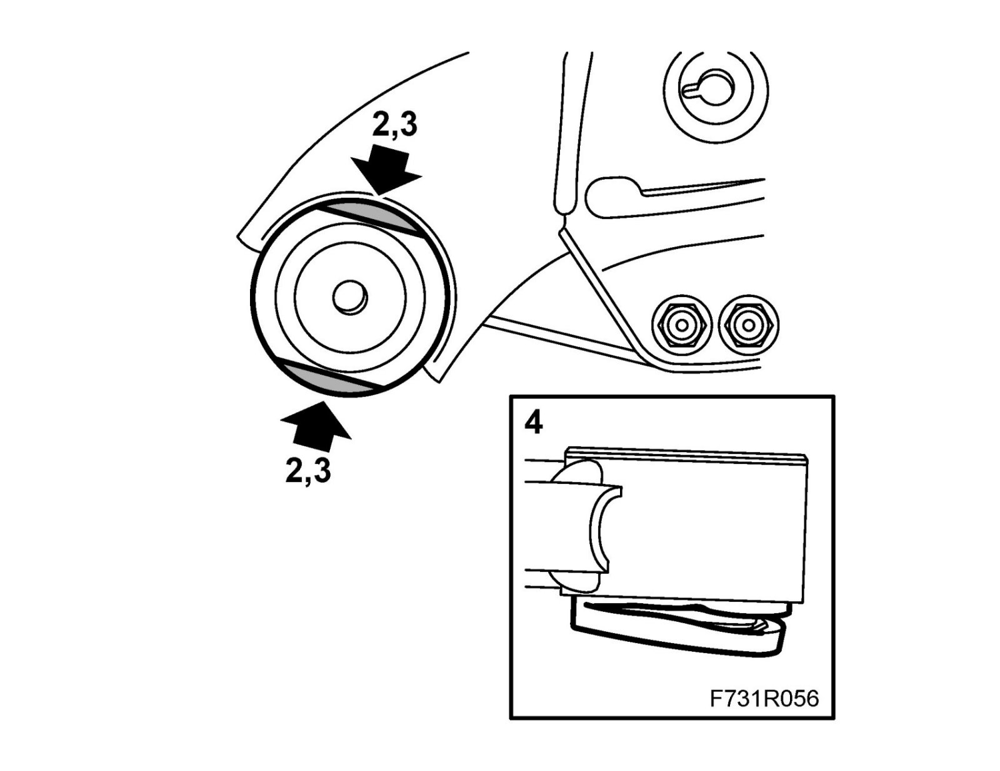
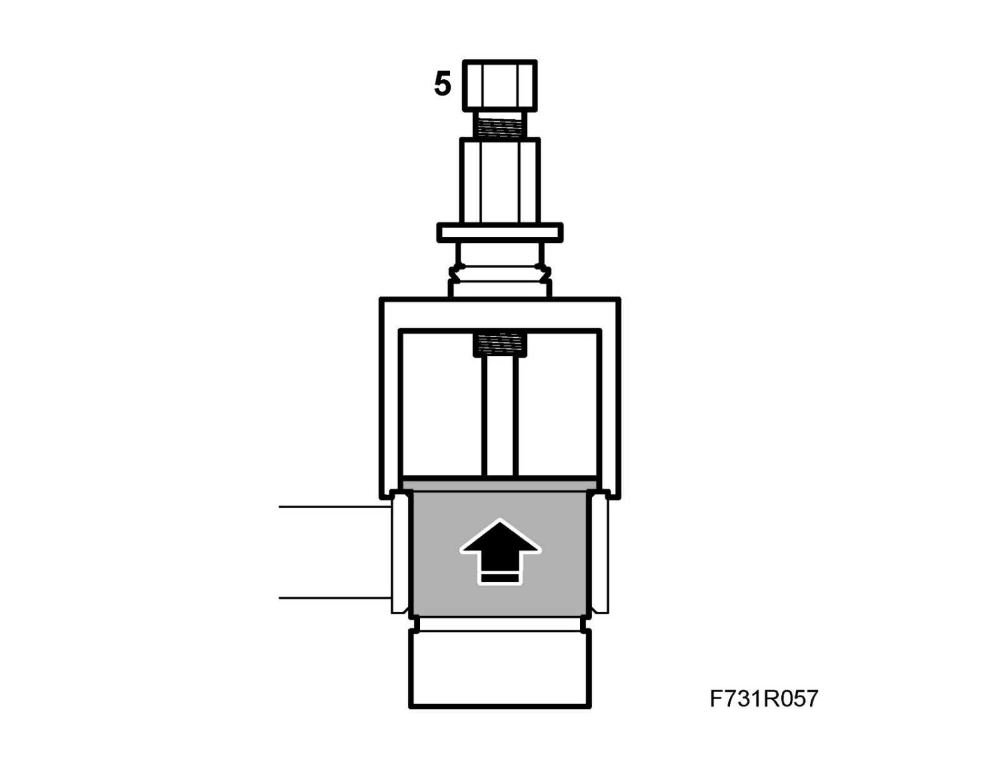
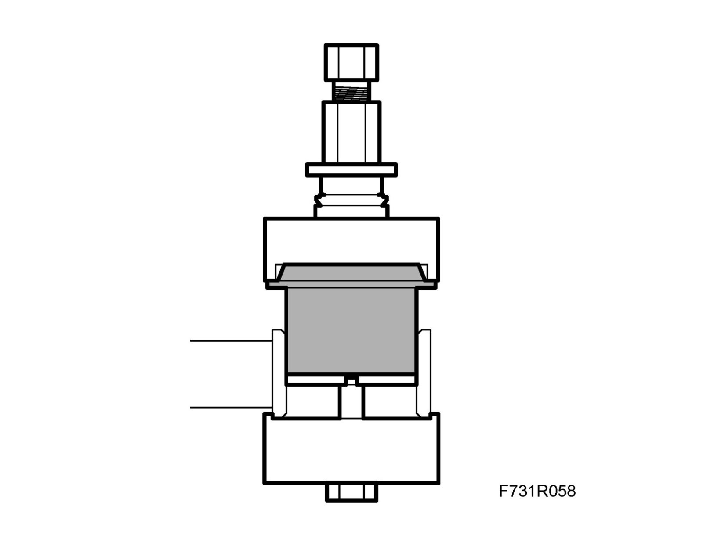

Front Subframe Mount: Service and Repair
Subframe bushNote
This method involves destructive disassembly. It is not possible to refit the old bush.
To remove
1. Remove subframe, see Subframe B207 or Subframe, To remove and to fit, Z19
2. Cut away the rubber from the bush.

3. Saw or cut a groove on either side. Break off the flange from the bush to make room for the support.
4. Cut away the rubber edge protruding from the underside of the bush.
5. Remove the bush using a pull rod 907 and press sleeve KM 907-14 from 89 96 779 Set of press sleeves, front assembly and a support from 89 96 902 Subframe bush set

To fit
Note
Make sure the bush is pressed in straight.
1. Press in the bush using sleeves from the 89 96 902 Subframe bush set.

2. Install subframe, see Subframe B207 or Subframe, To remove and to fit, Z19